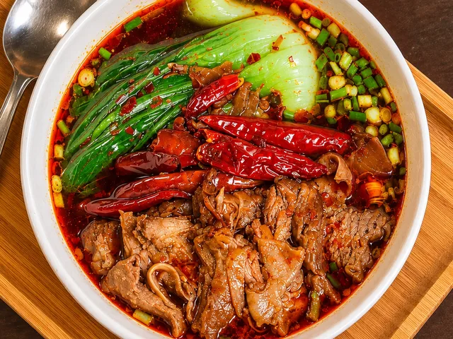
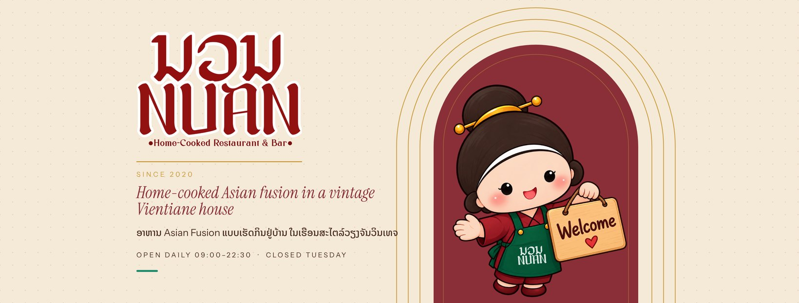
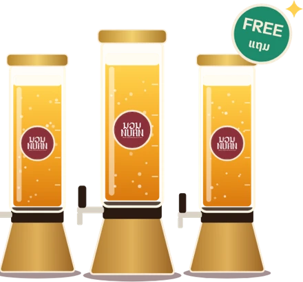
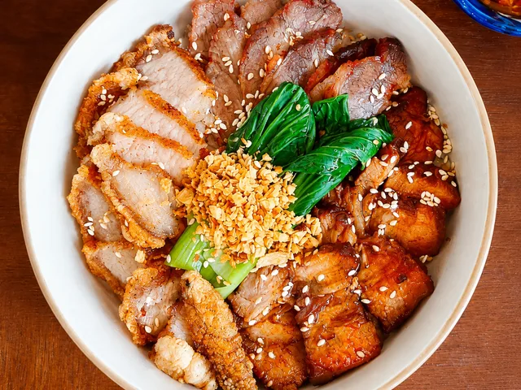
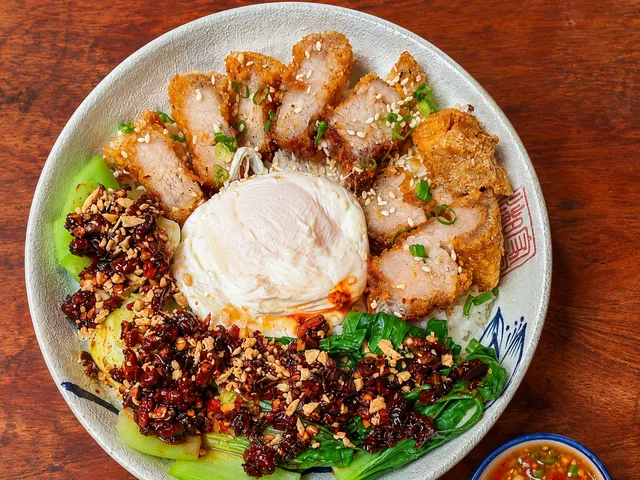
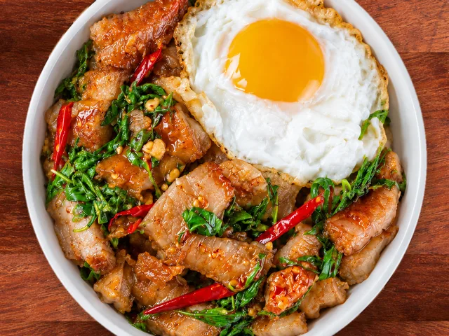
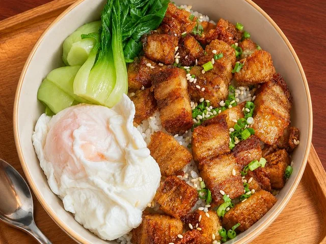
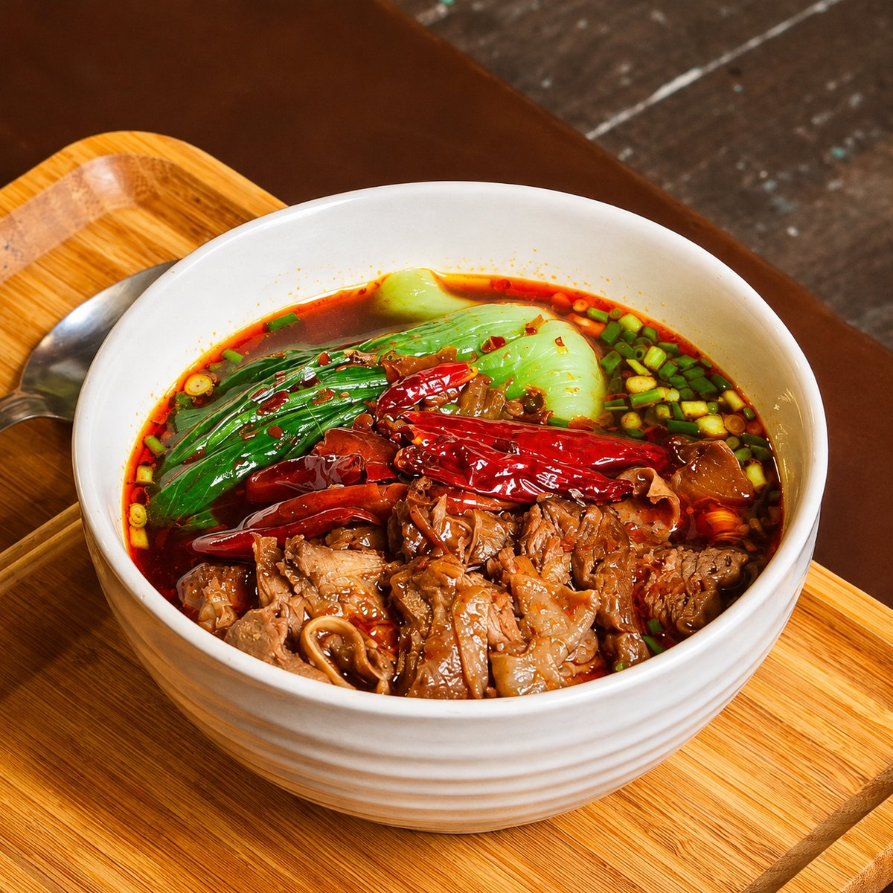
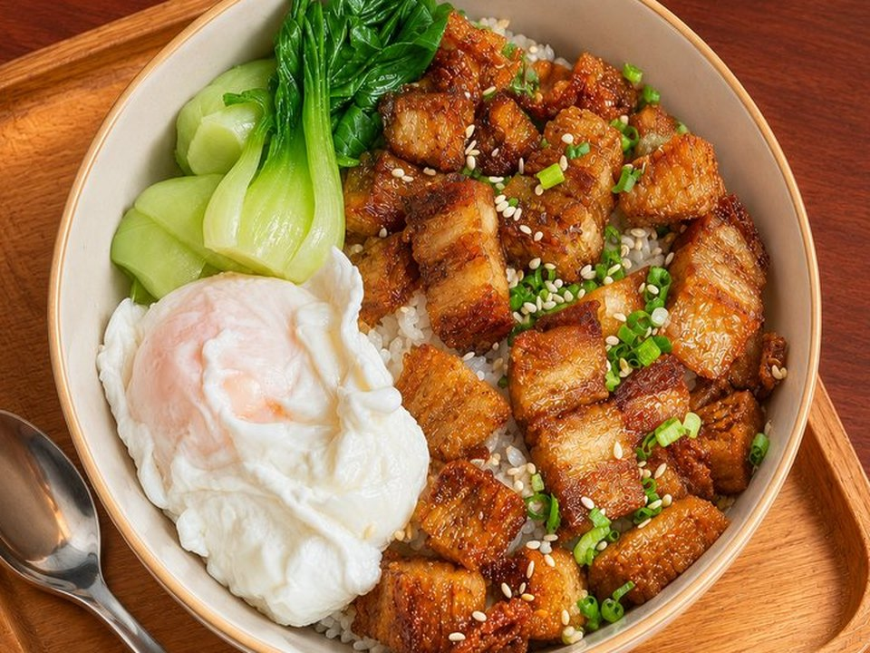
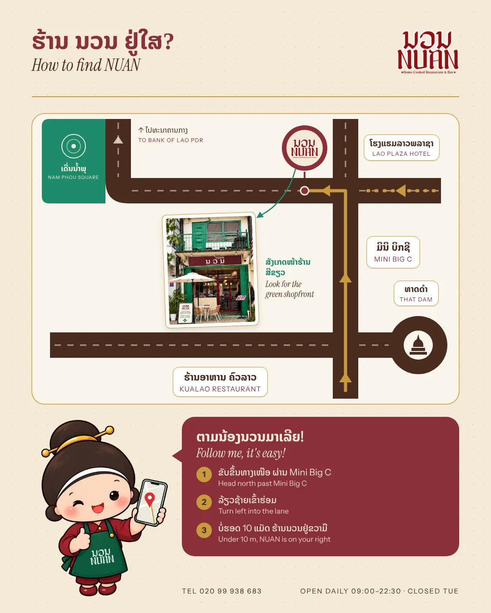

Sichuan braised beef noodle soup
ໝີ່ເສສວນງົວຕຸ໋ນ
105,000 LAK
The dish guests mention most in reviews. Spicy!ເມນູທີ່ລູກຄ້າເວົ້າເຖິງຫຼາຍທີ່ສຸດໃນຣີວິວ · ເຜັດ

NUAN (ນວນ, from 暖, “warmth”) is a family-run restaurant and bar in a two-storey vintage house in central Vientiane. Since 2020 we have cooked the food we grew up with: dim sum steamed to order, dry and soup noodles, wontons, rice bowls and plates to share, with a full plant-based menu for vegetarian and vegan guests.
Both floors are air-conditioned, with a cosy bar upstairs serving signature cocktails and cold draught Beerlao, and a few outdoor seats at the front. Most of our guests are visitors from abroad, so our staff speak English and the menu is in English and Lao.
ນວນ (ມາຈາກ 暖 ແປວ່າ ອົບອຸ່ນ) ເປັນຮ້ານອາຫານ ແລະ ບາຂອງຄອບຄົວ ໃນເຮືອນວິນເທຈ 2 ຊັ້ນ ກາງນະຄອນຫຼວງວຽງຈັນ. ຕັ້ງແຕ່ປີ 2020 ພວກເຮົາເຮັດອາຫານທີ່ພວກເຮົາກິນມາແຕ່ນ້ອຍ: ຕິ່ມຊຳໜຶ້ງສົດຕາມອໍເດີ, ໝີ່ແຫ້ງ, ໝີ່ນ້ຳ, ກ້ຽວນ້ຳ, ເຂົ້າໜ້າ ແລະ ກັບແກ້ມ ກັບເຂົ້າ, ພ້ອມເມນູໂປຣຕີນພືດສຳລັບຄົນກິນເຈ ແລະ ວີແກນ.
ຮ້ານມີແອທັງສອງຊັ້ນ ຊັ້ນເທິງເປັນບາບັນຍາກາດອົບອຸ່ນ ມີຄັອກເທວ signature ແລະ ເບຍລາວສົດເຢັນໆ ແລະ ມີບ່ອນນັ່ງດ້ານນອກໜ້າຮ້ານໜ້ອຍໜຶ່ງ. ລູກຄ້າສ່ວນໃຫຍ່ເປັນນັກທ່ອງທ່ຽວຕ່າງປະເທດ ພະນັກງານຈຶ່ງເວົ້າພາສາອັງກິດໄດ້ ແລະ ເມນູມີທັງພາສາອັງກິດ ແລະ ລາວ.
暖nuǎn · warmnuǎn · ແປວ່າ ອົບອຸ່ນ
A Lao girl with Chinese roots, the daughter of a Vientiane family, who came home to run the family kitchen. Her name comes from 暖, meaning warm. She believes the best food is food cooked for people at home.
ຍິງສາວລາວເຊື້ອສາຍຈີນ ລູກສາວຄອບຄົວເຮືອນແຖວກາງນະຄອນວຽງຈັນ ທີ່ກັບມາສືບທອດຮ້ານອາຫານຂອງເຮືອນ. ຊື່ "ນວນ" ມາຈາກ 暖 ທີ່ແປວ່າ ອົບອຸ່ນ. ນາງເຊື່ອວ່າ ອາຫານທີ່ແຊບທີ່ສຸດ ຄືອາຫານທີ່ເຮັດໃຫ້ຄົນໃນເຮືອນກິນ.
Come for the food, stay for the house.ມາເພາະອາຫານ ຢູ່ຕໍ່ເພາະບັນຍາກາດ
A relaxed, air-conditioned sit-down meal a short walk from That Dam, with an English menu and English-speaking staff.ນັ່ງກິນສະບາຍໆ ມີແອ ຍ່າງໄປທາດດຳບໍ່ໄກ ມີເມນູພາສາອັງກິດ ແລະ ພະນັກງານເວົ້າພາສາອັງກິດໄດ້
A full plant-based menu: crispy plant-based pork, plant-based chicken, tofu and vegetables. Vegan? Let us know and we will leave out the egg.ມີເມນູໂປຣຕີນພືດຄົບ: ໝູກອບໂປຣຕີນພືດ ໄກ່ໂປຣຕີນພືດ ເຕົາຮູ້ ແລະ ຜັກ. ຖ້າກິນວີແກນ ສາມາດແຈ້ງທາງຮ້ານໄດ້ວ່າບໍ່ໃສ່ໄຂ່
Shumai, har gow and buns steamed fresh to order, plus Sichuan braised beef noodles and wontons.ຂະໜົມຈີບ ຮະເກົ໋າ ແລະ ຊາລາເປົາ ໜຶ້ງສົດຕາມອໍເດີ ມີໝີ່ແຫ້ງ, ໝີ່ນ້ຳ ແລະ ກ້ຽວນ້ຳ
Plates to share, beer towers and happy hour 17:00–20:00 with draught Beerlao buy 2 get 1 free.ກັບແກ້ມ ກັບເຂົ້າ, ທາວເວີເບຍ ແລະ Happy Hour 17:00–20:00 ເບຍລາວສົດ ຊື້ 2 ແຖມ 1
A cosy upstairs bar in a vintage house with signature cocktails such as Madame Nuan and Uncle Moon.ບາຊັ້ນເທິງບັນຍາກາດອົບອຸ່ນ ໃນເຮືອນວິນເທຈ ມີຄັອກເທວ signature ເຊັ່ນ ຍານາງນວນ ແລະ ບ່າວພະຈັນ
Mild and familiar dishes like fried rice, garlic rice bowls and dumplings, and free table games with Nong Nuan while the food cooks.ອາຫານລົດຊາດອ່ອນ ກິນງ່າຍ ເຊັ່ນ ເຂົ້າຜັດ ເຂົ້າໜ້າກະທຽມ ແລະ ຂະໜົມຈີບ ມີເກມຟຣີກັບນ້ອງນວນໃຫ້ຫຼິ້ນລະຫວ່າງລໍອາຫານ
Open from 09:00 with espresso drinks, cold brew, Thai tea and quick rice bowls.ເປີດແຕ່ 09:00 ມີກາເຟ cold brew ຊາໄທ ແລະ ເຂົ້າໜ້າເຮັດໄວ
Space in the vintage house can be booked by the hour for private gatherings and pre-wedding photos.ຈອງພື້ນທີ່ໃນເຮືອນວິນເທຈເປັນຊົ່ວໂມງ ສຳລັບງານລ້ຽງສ່ວນຕົວ ແລະ ຖ່າຍຮູບ pre-wedding ໄດ້
Good to know: Closed on Tuesdays. · Dim sum is steamed to order, so allow about 15 minutes. · Busy evenings can be slower; come before 18:00 or book ahead by phone. · Prices include 10% VAT. · No outside food or drinks (corkage for wine and spirits). · Please pay in Lao kip; USD and THB accepted at the restaurant's exchange rate, change in kip only. · No credit cards: cash or bank QR (BCEL One, IB Cool).
ຄວນຮູ້: ປິດວັນອັງຄານ · ຕິ່ມຊຳໜຶ້ງສົດຕາມອໍເດີ ລໍປະມານ 15 ນາທີ · ຕອນແລງຄົນຫຼາຍອາດຊ້າ ມາກ່ອນ 18:00 ຫຼື ຈອງລ່ວງໜ້າ · ລາຄາລວມ VAT 10% ແລ້ວ · ບໍ່ອະນຸຍາດນຳອາຫານ ແລະ ເຄື່ອງດື່ມຈາກພາຍນອກເຂົ້າມາກິນໃນຮ້ານ (ເຫຼົ້າ ແລະ ວາຍ ມີຄ່າເປີດຂວດ) · ກະລຸນາຊຳລະເປັນເງິນກີບ · ຮັບໂດລາ ແລະ ບາດ ຕາມອັດຕາແລກປ່ຽນຂອງຮ້ານ · ເງິນທອນເປັນເງິນກີບເທົ່ານັ້ນ · ບໍ່ຮັບບັດເຄຣດິດ: ເງິນສົດ ຫຼື QR ທະນາຄານ (BCEL One, IB Cool)
Deals running now at NUAN.ໂປຣໂມຊັ່ນທີ່ກຳລັງມີຢູ່ຮ້ານນວນ
Every opening day (closed Tuesdays).ທຸກມື້ ຍົກເວັ້ນວັນອັງຄານ
 Draught Beerlaoເບຍລາວສົດ
Draught Beerlaoເບຍລາວສົດ
Beer tower 2.5 Lທາວເວີເບຍ 2.5 LWaiting for your dim sum? Scan the QR code on your table and play five free mini-games with Nong Nuan. Clear level 3 in Match It!, Catch It! or Connect 4 for a chance to get a free drink (selected drinks) or 10% off food. One prize per table.
ລໍຖ້າຕິ່ມຊຳຢູ່ບໍ? ສະແກນ QR ເທິງໂຕະ ຫຼິ້ນເກມຟຣີ 5 ເກມ ກັບນ້ອງນວນ. ຜ່ານດ່ານ 3 ໃນ Match It!, Catch It! ຫຼື Connect 4 ລຸ້ນຮັບເຄື່ອງດື່ມຟຣີ (ຕາມລາຍການທີ່ຮ້ານກຳນົດ) ຫຼື ສ່ວນຫຼຸດອາຫານ 10%. 1 ລາງວັນຕໍ່ໂຕະ.
From our Google reviews and best-sellersສະຫຼຸບຈາກຣີວິວ Google ແລະ ເມນູຂາຍດີຂອງຮ້ານ
★ 4.4 on Google · 580+ reviewsໃນ Google · 580+ ຣີວິວ
ໝີ່ເສສວນງົວຕຸ໋ນ
105,000 LAK
The dish guests mention most in reviews. Spicy!ເມນູທີ່ລູກຄ້າເວົ້າເຖິງຫຼາຍທີ່ສຸດໃນຣີວິວ · ເຜັດ

ເຂົ້າໜ້າໝູສາມສະຫາຍ
89,000 LAK
One of our best-sellers: crispy pork, BBQ red pork and braised pork in one bowl.ເມນູຂາຍດີຂອງຮ້ານ: ໝູກອບ, ໝູແດງ ແລະ ໝູຕົ້ມເຄັມ ໃນຖ້ວຍດຽວ

ເຂົ້າໜ້າໝູກອບຜັດຊອສເສສວນ
85,000 LAK
Crispy pork, again and again in our reviews.ໝູກອບ ທີ່ລູກຄ້າກັບມາສັ່ງຊ້ຳ

ເຂົ້າກະເພົາໝູກອບ
77,000 LAK
A guest favourite with a fried egg on top.ກະເພົາໝູກອບ ໄຂ່ດາວ

ເຂົ້າໝູກອບໂປຣຕີນພືດ
95,000 LAK
Loved by vegetarian and vegan guests.ລູກຄ້າກິນເຈ ແລະ ວີແກນມັກ
“I wanted to order the entire menu… absolutely worth ordering and sharing with friends. Great beer deals too!”
“Their Sichuan Beef Noodle and Wonton soup are MUST try! Our no.1 go to place to eat in Vientiane.”
“I have the plant based pork belly with rice and pak choy – must try!”
“The spicy szechuan noodles were very good, won ton soup, spicy fried noodles and holy basil pork stir fry also excellent.”
“We had the crispy duck with egg noodles and Chinese bbq pork with rice. Both were excellent.”
“Even a plain omelette was exceptional.”
Prices in Lao kip (LAK). 🌱 = plant-based or vegetarian.ລາຄາເປັນກີບ · 🌱 = ໂປຣຕີນພືດ ຫຼື ອາຫານເຈ


Swipe or tap the corners to turn the pages.ປັດ ຫຼື ແຕະມຸມໜ້າ ເພື່ອເປີດໜ້າຕໍ່ໄປ


Please read before you come. Thank you for understanding!ລະບຽບຂອງຮ້ານ · ຂອບໃຈທີ່ທ່ານເຂົ້າໃຈ
ບໍ່ອະນຸຍາດນຳອາຫານ ແລະ ເຄື່ອງດື່ມຈາກພາຍນອກເຂົ້າມາກິນໃນຮ້ານ
ອະນຸຍາດນຳເຫຼົ້າ ແລະ ວາຍ ມາເອງ ໂດຍມີຄ່າເປີດຂວດ
Spirits 150,000 · Wine 100,000 kip per bottle · ເຫຼົ້າ 150,000 ກີບ, ວາຍ 100,000 ກີບ ຕໍ່ຂວດ
ກໍລະນີບໍ່ສະດວກຈ່າຍເງິນກີບແທ້ໆ ຮ້ານສາມາດແລກປ່ຽນໂດລາ ແລະ ບາດ ຕາມອັດຕາແລກປ່ຽນຂອງຮ້ານ
Lao bank apps, K PLUS, UnionPay, GLN – ສະແກນໄດ້ຈາກແອັບທະນາຄານລາວ ແລະ ຕ່າງປະເທດ
Thank you for understanding · ຂອບໃຈທີ່ທ່ານເຂົ້າໃຈ
Prices include 10% VAT · ລາຄາລວມ VAT 10% ແລ້ວ
Send your booking to NUAN on WhatsApp. Your table is confirmed when we reply.ສົ່ງການຈອງຫາຮ້ານນວນທາງ WhatsApp · ການຈອງຈະສຳເລັດເມື່ອຮ້ານຕອບກັບ

Questions guests ask usຄຳຖາມທີ່ລູກຄ້າມັກຖາມ
NUAN suits travellers wanting a relaxed sit-down meal in central Vientiane, vegetarians and vegans, dim sum and noodle lovers, friends and groups sharing plates and beer towers, after-work drinks and date nights in the upstairs bar, families, and small private parties.
Yes. The menu has many plates to share, beer towers for groups, mild dishes like fried rice and dumplings, and free table games with the mascot Nong Nuan. The vintage house has two floors, and space can be booked by the hour for private gatherings.
NUAN is in the centre of Vientiane, near That Dam (the Black Stupa), Lao Plaza Hotel and Nam Phou fountain park.
Open 09:00–22:30 every day except Tuesday. Closed on Tuesdays.
Home-cooked Asian fusion: dim sum, dry and soup noodles, wontons, Lao and Thai-style rice bowls, curries and plates to share, plus a plant-based menu.
Yes. NUAN has a plant-based menu with plant-based pork and chicken dishes, tofu and vegetable plates. Some dishes come with egg; just let us know and we will leave it out for a vegan meal.
Yes. Happy hour is 17:00–20:00 on opening days: draught Beerlao buy 2 glasses get 1 free (3 glasses for 56,000 LAK), and beer towers 2.5 L buy 2 get 1 free (3 towers for 438,000 LAK). Prices include 10% VAT.
Yes. Both floors of the two-storey vintage house are air-conditioned, including the bar upstairs. There is also a small outdoor seating area at the front.
Yes. All menu prices are in Lao kip (LAK) and already include 10% VAT.
Yes, NUAN takes delivery orders through foodpanda.
Scan the QR code on your table to play five free mini-games with Nong Nuan, the NUAN mascot, while you wait for your food. Clearing level 3 in Match It!, Catch It! or Connect 4 gives a chance to get a free drink from a selected list or 10% off food. One prize per table.
Outside food and drinks are not allowed at NUAN, except wine and spirits with a corkage fee: wine 100,000 LAK, spirits 150,000 LAK per bottle. Thank you for understanding.
Please pay in Lao kip (LAK). If you don't have kip, we also accept US dollars and Thai baht at the restaurant's own exchange rate, which is lower than bank rates. Change is given in Lao kip only. For the best rate, change money at a bank or licensed exchange before your visit.
No credit cards. We accept cash, or bank transfer by QR to our BCEL One (BCEL) or IB Cool (Indochina Bank) account. Many local and foreign apps can scan our QR, including Lao bank apps (BCEL One, JDB Yes, LDB, BFL, LocaPay), Thai bank apps such as K PLUS, UnionPay and GLN.
ນັກທ່ອງທ່ຽວທີ່ຢາກນັ່ງກິນສະບາຍໆ ໃນໃຈກາງວຽງຈັນ, ຄົນກິນເຈ ແລະ ວີແກນ, ຄົນມັກຕິ່ມຊຳ ແລະ ເສັ້ນ, ໝູ່ເພື່ອນ ແລະ ກຸ່ມທີ່ມາແບ່ງກັນກິນ ແລະ ສັ່ງທາວເວີເບຍ, ດື່ມຫຼັງເລີກວຽກ ຫຼື ນັດກັບຄົນພິເສດທີ່ບາຊັ້ນເທິງ, ຄອບຄົວ ແລະ ງານລ້ຽງນ້ອຍໆ.
ເໝາະ. ມີກັບແກ້ມ ກັບເຂົ້າຫຼາຍ, ທາວເວີເບຍສຳລັບກຸ່ມ, ອາຫານລົດຊາດອ່ອນເຊັ່ນ ເຂົ້າຜັດ ແລະ ຂະໜົມຈີບ, ແລະ ເກມຟຣີກັບນ້ອງນວນ. ເຮືອນມີ 2 ຊັ້ນ ຈອງພື້ນທີ່ເປັນຊົ່ວໂມງສຳລັບງານສ່ວນຕົວໄດ້.
ຢູ່ໃນກາງນະຄອນຫຼວງວຽງຈັນ ໃກ້ກັບທາດດຳ, ໂຮງແຮມລາວພລາຊ່າ ແລະ ສວນນ້ຳພຸ.
ເປີດ 09:00–22:30 ທຸກມື້ ຍົກເວັ້ນວັນອັງຄານ.
ອາຫານ Asian Fusion ແບບເຮັດກິນຢູ່ບ້ານ: ຕິ່ມຊຳ, ໝີ່ແຫ້ງ, ໝີ່ນ້ຳ, ກ້ຽວນ້ຳ, ເຂົ້າໜ້າແບບລາວ ແລະ ໄທ, ແກງກະຫຼີ່ ແລະ ກັບແກ້ມ ກັບເຂົ້າ, ພ້ອມເມນູໂປຣຕີນພືດ.
ມີ. ມີເມນູໂປຣຕີນພືດ ທັງໝູ ແລະ ໄກ່ໂປຣຕີນພືດ, ເຕົາຮູ້ ແລະ ຜັກ. ບາງເມນູໃສ່ໄຂ່ ຖ້າກິນວີແກນ ສາມາດແຈ້ງທາງຮ້ານໄດ້ວ່າບໍ່ໃສ່ໄຂ່.
ມີ. 17:00–20:00 ທຸກມື້ທີ່ເປີດ: ເບຍລາວສົດ ຊື້ 2 ແກ້ວ ແຖມ 1 (3 ແກ້ວ 56,000 ກີບ) ແລະ ທາວເວີ 2.5 L ຊື້ 2 ແຖມ 1 (3 ທາວເວີ 438,000 ກີບ). ລາຄາລວມ VAT 10% ແລ້ວ.
ມີ. ເຮືອນວິນເທຈ 2 ຊັ້ນ ມີແອທັງສອງຊັ້ນ ລວມທັງບາຊັ້ນເທິງ. ມີບ່ອນນັ່ງດ້ານນອກໜ້າຮ້ານນຳໜ້ອຍໜຶ່ງ.
ລວມແລ້ວ. ລາຄາໃນເມນູເປັນກີບ ແລະ ລວມ VAT 10% ແລ້ວ.
ໄດ້ ສັ່ງຜ່ານ foodpanda.
ສະແກນ QR ເທິງໂຕະ ຫຼິ້ນເກມຟຣີ 5 ເກມ ກັບນ້ອງນວນ ລະຫວ່າງລໍອາຫານ. ຜ່ານດ່ານ 3 ໃນ Match It!, Catch It! ຫຼື Connect 4 ລຸ້ນຮັບເຄື່ອງດື່ມຟຣີ (ຕາມລາຍການທີ່ຮ້ານກຳນົດ) ຫຼື ສ່ວນຫຼຸດອາຫານ 10%. 1 ລາງວັນຕໍ່ໂຕະ.
ບໍ່ອະນຸຍາດນຳອາຫານ ແລະ ເຄື່ອງດື່ມຈາກພາຍນອກເຂົ້າມາກິນໃນຮ້ານ ຍົກເວັ້ນເຫຼົ້າ ແລະ ວາຍ ທີ່ເສຍຄ່າເປີດຂວດ: ເຫຼົ້າ 150,000 ກີບ, ວາຍ 100,000 ກີບ ຕໍ່ຂວດ. ຂອບໃຈທີ່ທ່ານເຂົ້າໃຈ.
ກະລຸນາຊຳລະເປັນເງິນກີບ. ຖ້າບໍ່ມີກີບ ຮ້ານຮັບໂດລາສະຫະລັດ ແລະ ເງິນບາດ ຕາມອັດຕາແລກປ່ຽນຂອງຮ້ານ ເຊິ່ງຕ່ຳກວ່າອັດຕາທະນາຄານ. ເງິນທອນຈະເປັນເງິນກີບເທົ່ານັ້ນ. ເພື່ອໃຫ້ໄດ້ອັດຕາດີ ແນະນຳໃຫ້ແລກເງິນທີ່ທະນາຄານ ຫຼື ຮ້ານແລກເງິນທີ່ຖືກກົດໝາຍກ່ອນມາຮ້ານ.
ບໍ່ຮັບບັດເຄຣດິດ. ຮັບເງິນສົດ ແລະ ໂອນຜ່ານ QR ເຂົ້າບັນຊີຂອງຮ້ານ ທີ່ BCEL One (ທະນາຄານການຄ້າຕ່າງປະເທດລາວ) ແລະ IB Cool (ທະນາຄານອິນໂດໄຊນາ) ເທົ່ານັ້ນ. ລູກຄ້າທັງພາຍໃນ ແລະ ຕ່າງປະເທດ ສະແກນ QR ຂອງຮ້ານໄດ້ຈາກຫຼາຍແອັບ ເຊັ່ນ ແອັບທະນາຄານລາວ (BCEL One, JDB Yes, LDB, BFL, LocaPay), ແອັບທະນາຄານໄທ ເຊັ່ນ K PLUS, UnionPay ແລະ GLN.